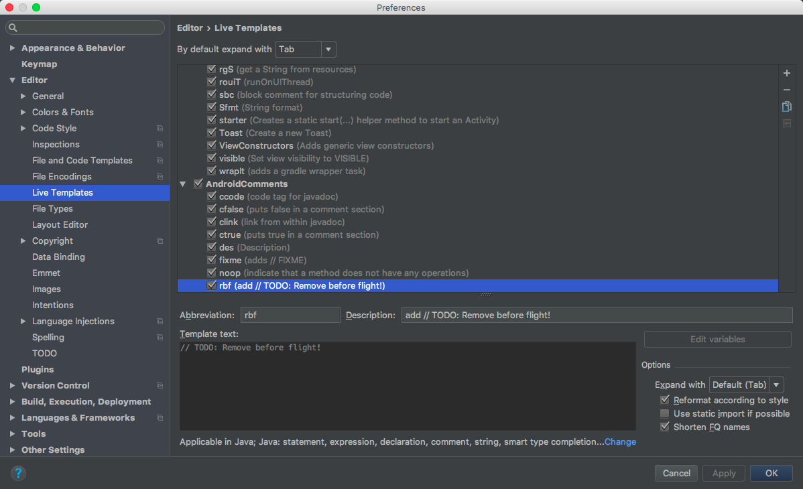

航空业有很多值得我们借鉴和学习的工作方式，将来有时间我会给大家引荐更多实例。
仔细观察每架停泊着的飞机，会发现机身很多地方都挂着细长的红布条，上面写着“REMOVE BEFORE FLIGHT”，中文翻译成“飞行前拆除”。这种布条没什么技术含量，但是非常重要！
比如，为了避免杂物或者昆虫进入皮托管，一般会给皮托管戴上套子，但是起飞前必须取下套子，否则飞行员就无法获得空速数据，从而导致事故。还有起落架安全插销，预防飞机在地面时起落架意外收起，但是忘记拔掉的话，起飞后就会因为无法收起起落架而被迫返航，虽然不至于坠毁，但是燃油损耗（包括可能需要进行空中放油）、折旧（比如轮胎、刹车的磨损）等，成本咂舌。
在这些不起眼但又不能跟随飞机上天的部件上挂一根红布条，便是为了机务人员做航前检查时避免疏漏。
触类旁通，这根小小的布条，对于程序员朋友们也很有实用价值。挂在冲锋衣上？挂在双肩包上？Stop，说正事儿！
我们在调试代码的时候，常常会写死一些变量的值，比如 GPS 坐标、数据库查询条件、轮询时间间隔、版本号等等，这些定值方便了调试工作，但是就像皮托管套和起落架销子一样，是绝对不能随着软件更新发布出去的——严格地讲，甚至都禁止合并到主干代码。
不幸的是，人是不可靠的。很多时候我们都会因为忘了将这些定值移除结果导致程序无法正常工作。其实都是些低级错误。
分享一下我的做法，没啥技术含量，希望能给你带来些许启发。当然，也欢迎更好的建议！
假设有一个定时刷新数据的功能，实际业务要求每 2 小时检查一次，时间间隔定义如下：
1 | private static final long INTEVAL_DATA_RELOAD = 2 * 3600 * 1000; |
调试的时候，为了缩短等待时间，我们可以设为 5 秒一次。
1 | private static final long INTEVAL_DATA_RELOAD = 5_000; |
于是这里就存在一个隐患，2 小时被缩短为 5 秒钟，代码本身没有问题，所以别人在审核这段代码的时候，除非对业务需求很了解，否则不大可能注意到 5 秒只是调试代码，不能提交到服务器更不能打包发布。
我的惯用做法就是，同时保留两段代码：
1 | private static final long INTEVAL_DATA_RELOAD = 5_000; // TODO: Remove before flight! |
我会告诉我的同事，code review 的时候，任何带有“Remove before flight!”标记的代码，除非是注释掉的，否则都不能提交。并且我也鼓励他们使用同样的标记来标注代码。
上面代码有个好处，使用快捷键，删一行、取消注释一行，两步操作迅速恢复原貌。
所以我在提交代码前，会全文搜索“Remove before flight!”，然后逐一删除或注释掉。当然也可以从 TODO 框里直接定位，不过如果项目里还有很多其它 TODO 标记，那还是全文搜索比较保险。
为了方便添加这个标记，我会使用代码模板功能，以 Android Studio 为例，在 Live Templates 里添加模板： 
这样就只需在要添加这个标记的位置输入“rbf”，然后一 Tab 就出来了。
还有一种情况也会产生大量冗余代码。当我们在调试一个调用关系很深，尤其是存在大量回调的 bug 时，常常不得不靠输出很多日志来观察代码的实际运行情况。一方面，这些 Log 的输出可能是实际开发不需要的；另一方面，因为项目本身也存在很多日志，比较容易混在在一起。如下是我的习惯：
1 | public static final String TAG_BUG_9371 = "BUG9371"; // TODO: Remove before flight! |
因为 TAG 是公开级别，所以在其它类、包里面，只要是这个 bug 牵扯到的地方，都可以使用同一个 TAG，然后在 Logcat 里设置 filter 为“BUG9371”，就可以非常清楚地了解代码的实际执行情况，提高修复问题的效率。搞定了 bug 之后，删除标有 RBF 标识的代码，所有临时的日志输出调用立马显形，逐一删除，确保代码能够成功编译，就可以着手提交了。